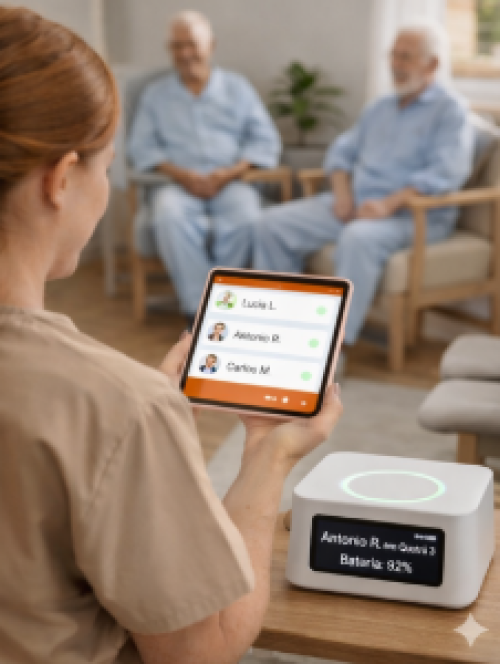
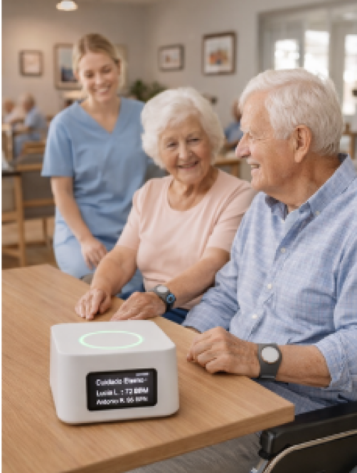

Transformando Complexidade
em Inovação Científica.
Uma plataforma criada para facilitar o cuidado de idosos, trazendo mais segurança e tranquilidade no dia a dia.
Estrutura de Pesquisa
A excelência acadêmica detalhada em cada pilar do desenvolvimento.
Diferencial Exclusivo
O Cuidado Eterno oferece uma solução integrada para o cuidado de idosos, reunindo monitoramento, organização e comunicação em uma única plataforma. Focado nas necessidades de pacientes com Alzheimer, o sistema aumenta a segurança e proporciona mais tranquilidade para familiares e cuidadores.
Público Alvo
Famílias que possuem idosos, cuidadores profissionais, pessoas responsáveis por familiares dependentes e instituições que oferecem cuidados a idosos.
Metodologia
Baseado em princípios heurísticos modernos e análise quantitativa.
Resultados
Ganhos mensuráveis em segurança, organização e tempo de resposta no cuidado diário.


Monitoramento Contínuo
Garantir o acompanhamento em tempo real de idosos e pessoas dependentes, reduzindo riscos como quedas, fugas e emergências sem socorro.
Organização dos Cuidados
Centralizar informações importantes como rotina, medicações e histórico, facilitando a gestão do cuidado entre familiares e cuidadores.
Comunicação Integrada
Melhorar a comunicação entre todos os responsáveis, promovendo mais agilidade nas decisões e maior segurança para o paciente.